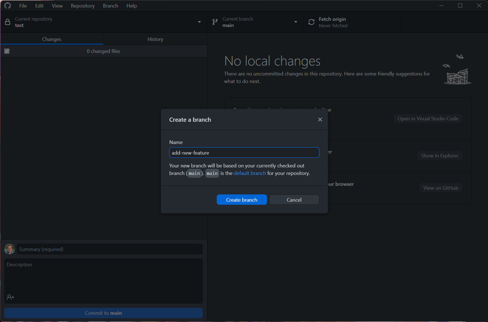
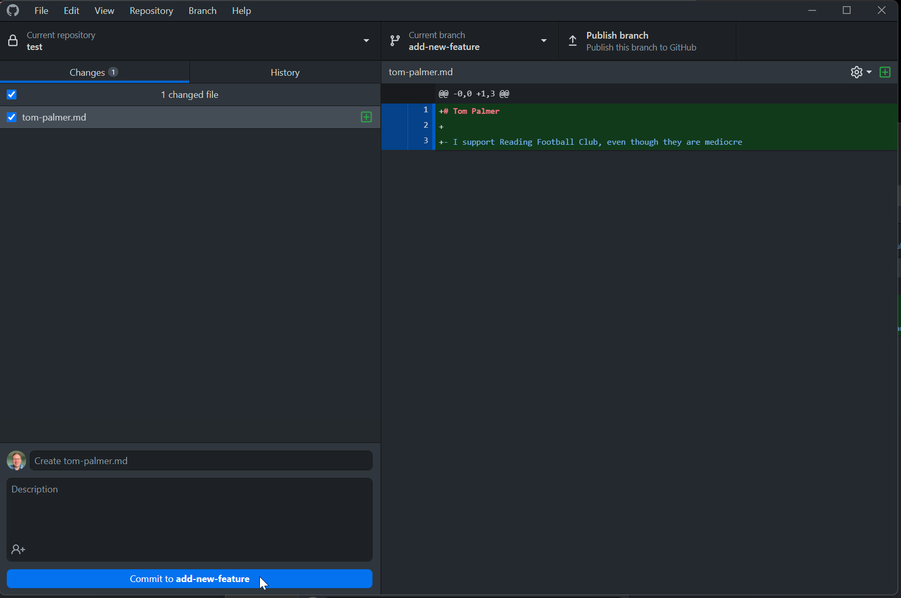
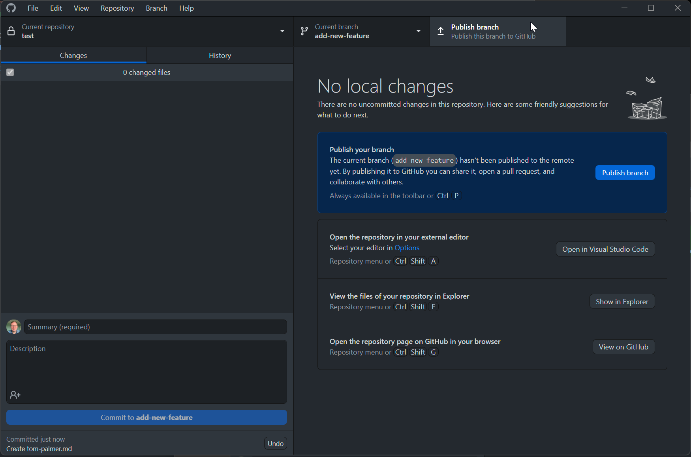
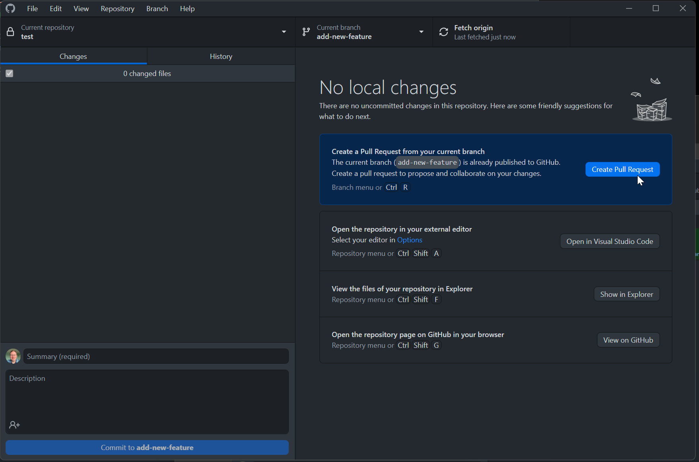
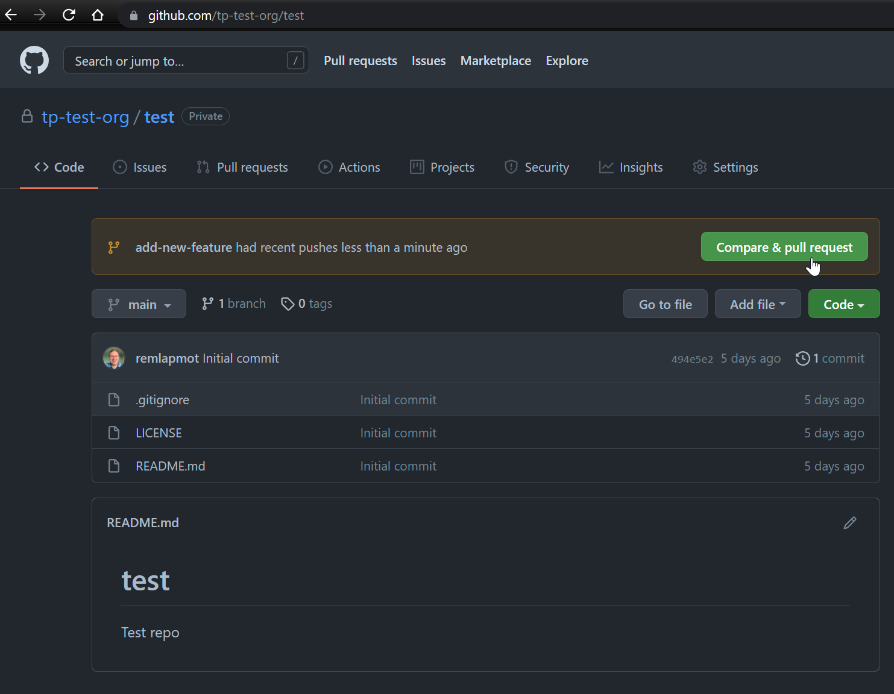
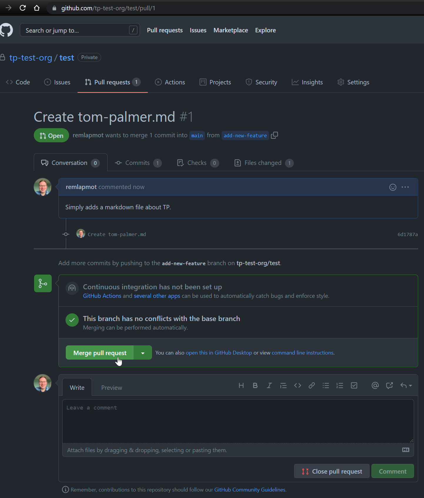
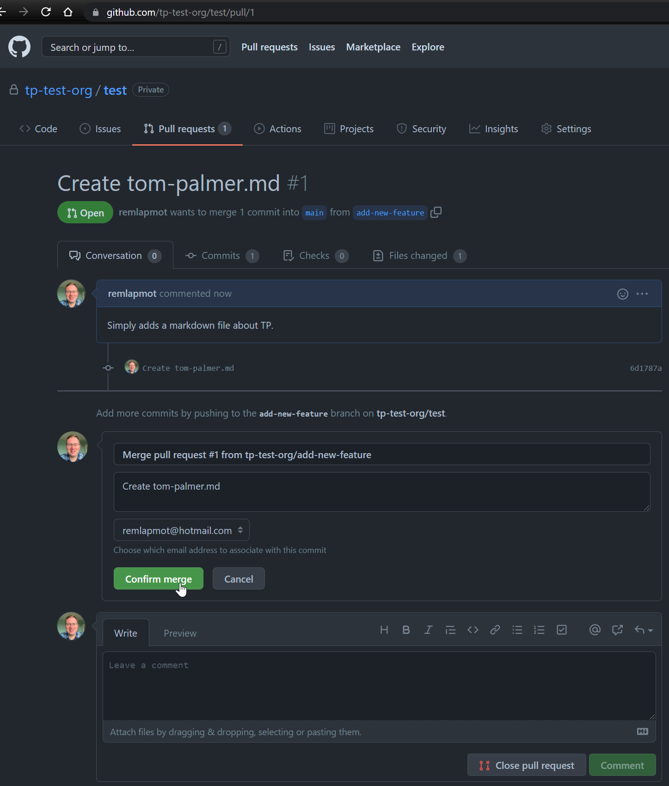
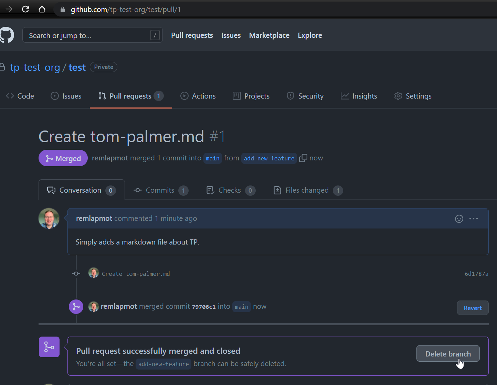
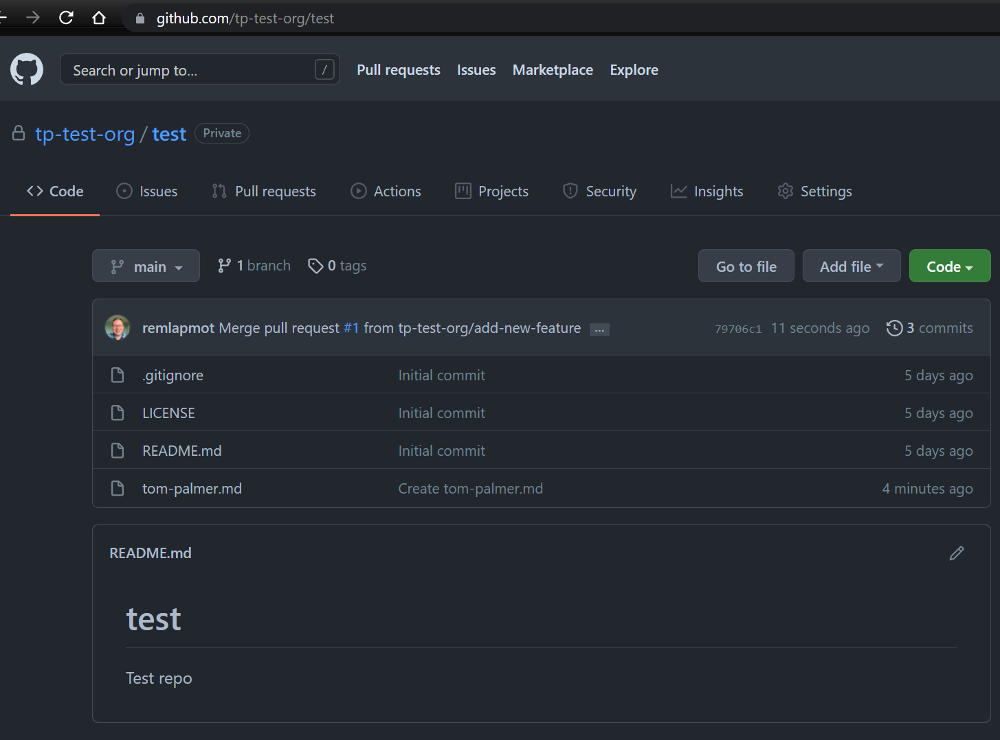

Making a pull request
- Let’s start by creating a new branch

- We do some work (in VSCode/text editor/RStudio) which creates a markdown file with a title and some text. We then make a new commit which adds this new file to the repo

- Next publish the new branch to GitHub

- Now initiate the creation of the PR by either clicking in GitHub Desktop “Create Pull Request”

- or clicking on the button on the repo webpage “Compare & pull request”

- Edit the title box, add some extra text in the comment box, select a reviewer, and then click “Create pull request”

- You can amend/edit pull requests by modifying/adding commits to the branch from which you sent the PR
- See more about pull request reviews here
- (The reviewer) will then merge your PR

- (The reviewer) will then confirm the merge

- (Optional) Delete the branch the PR came from

- The PR is now finished and we can see the merge commit in the default (
main/master) branch

- In GitHub Desktop click “Fetch origin”/“Pull origin” to pull the updated
main/master branch down to your local machine … and the process begins again …